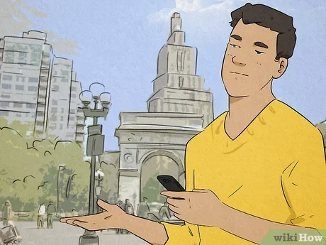

Sveiki, aš esu Raimundas, esu 19 metų jaunuolis, gimiau ir gyvenu Vilniuje.
Man labai patinka Vilnius.
Mėgstamiausias metų laikas - Ruduo.
Mėgstamiausia spalva - Raudona.
Mėgstamiausias muzikinis instrumentas - Dambrelis.
Augintiniai - katinas ir jūrų kiaulytė.
Nemėgtamiasias dalykas - matematika.
Galiu pataisyti elektronikos prietaisus, ptobulinti el. įrangą, konstruoti dalykus.
